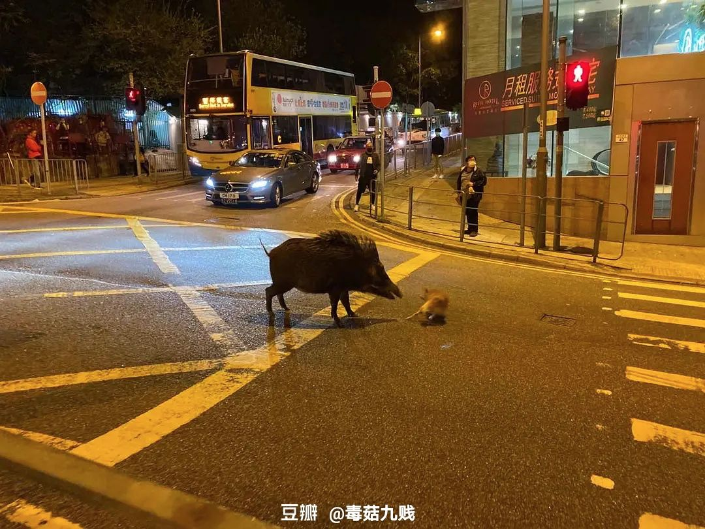

英国“隔离”日记 || 3月13日~17日：私人化的记录与感激
原文链接 备份链接 今天是3月18日，月相为29%的残月。 It is March 18 with a 29 percent of Waning Crescent. 距离新月还有 6 天。 There are 6 days until …
3月15日，伦敦。
天阴了一整天，我在家也没出门，傍晚的时候把睡衣换成了运动服——毛绒绒的粉色睡衣穿一整天之后会让人丧失斗志。亏我为了这第一天清早时还扒拉出朋友们在去年初送的Daily Planner，在去年的今日日期上写下今日待做事项——从“晾衣服”到“给小阳&ZY发武汉的文件”。这是“一鼓作气”里第一鼓时的煞有介事，未来如何发展便不知了。
订了好几个Focusmate上的session。这是一个让你和陌生人连线一起互相监督、专注工作一小时的网站，所以这一天里我见的学友来自：维尔纽斯（Vilnius）、纽约、德克萨斯、蒙特利尔、华沙和伦敦（被我成功安利的朋友）。和纽约连线的时候，我被一个物理博士提醒去买“抗生素、肾上腺糖皮质素(地塞米松)、氨茶碱、处方感冒药、还有哮喘的吸入药物”，打开Boots，发现退烧药基本都卖光了，而博士朋友又补刀一句，说我可能还会试着把自己运回来。于是，昨日动摇之后今日又有些动摇，下一个session，和德克萨斯的一个白人大哥连线，我说，我要用这个小时查从伦敦回中国的机票，然后问问朋友们各地的隔离政策。德州黄毛大哥显然觉得我小题大作，说他就是Focus on work，该去gym去gym，“人越害怕什么就越会碰上什么”，我质疑他你这不是迷信吗，他耸了耸肩。
（以后用Focusmate要把手机放远点！）
发现四月之前的机票已经没有什么可选项（早前就已经查过了，可还想再确认一遍），又发了朋友圈问伦敦朋友们的选择和国内各地的隔离政策，随即收到了汹涌来信。大概最狠的一条是是说，“四个半小时后也就是16号零点起所有北京入境的人员且目的地是北京的均需要隔离14天”——准确、冷静地劝退；当然，还有各种归国隔离故事的截屏转发。读罢至此，总算安下心来在英国呆住，毕竟回国也是高风险也充满未知，在飞机上政策又发生改变也未可知。“政策的不确定性”，对这件事开始有所感是从某个艺术区的开发、某个艺术家工作室群落的拆迁开始，没想到此时此刻我开始面对的是整个地图上的不确定——因为每个人下一秒都会慌，所以没办法预测某个时地的下一刻。傍晚的时候，就又看到另一个群里说伦敦回北京的许多国航班机也取消了。
英国的隔离政策许多人都在解读，我庆幸的是这件事至少可以被讨论，不管是数学模型错了，还是伦理上有问题，政策的错误可以被指出，可以预期未来会发生改变。不过讨论到最后，卫报上的英国医生说自己没有口罩也没有防护、英国每千人病床数持续十年下跌现在在几个国家中几乎垫底，这种事实又让人想，讨论是讨论了，怎么救呢？深夜的时候画家夫妇打来电话，说刚才又在动回国的念头，我如实和他们讲了目前我收集的信息，也又聊到英国人的镇定——这种镇定，一方面也是take care of your own shit，把专业的事留给专业的人去处理。不过这似乎也是一种切割——信任的话，可以一切如常。如果不信任精英和统治者，此时去做Petition，或者是，逃？能逃出去吗？
武汉封城的时候我和这对夫妇说起过，二十岁的时候觉得有些问题没什么讨论的意义，都是假想的，比如，“列车失控无法刹车，轨道前方站着5人，另一条轨道上站着1人，你会不会让火车变道?” 生命到底是不是数字，是瘟疫让这个问题突然变得这么真实烫手，每个决定都沾满鲜血。夫妇里的画家花了很长时间跟我从基督教的角度来讨论到底有没有资格来做这个决定，而眼下，他昨天在电话里说，你那个问题我又想了想，其实两条轨道是连在一起的，我们都站在上面，那其实是一条轨道。

原文链接 备份链接 今天是3月18日，月相为29%的残月。 It is March 18 with a 29 percent of Waning Crescent. 距离新月还有 6 天。 There are 6 days until …
原文链接 备份链接 伦敦，3月14日。出门前和室友讨论在外面摘下口罩的时候把口罩放哪儿的问题，她说她的可以叠起来，而我的是只有钢丝的普通外科口罩，并不方便。于是室友大发慈悲，我用五个没气阀的Silverline换了她一个可折叠、可重复使用 …
原文链接 备份链接 3月16日，伦敦。 十点钟，窗户外面传进来，幼儿园里孩子的哗啦哗啦的笑声。蓝天白云，阳光刺眼，“孩子们还没回家啊”……这是心里的反应。 Boris Johnson今天又开了记者会，“today we need to …
原文链接 备份链接 我们都是见证历史的人。 从“不明肺炎”到新冠病毒；从我关心国内的朋友到现在国内的朋友关心我；眼见着意大利的感染人数从一位数到五位数只用了两周多。 2020年3月4号下午看到了新闻，意大利全境停课。我赶快联系了在大学和高 …
原文链接 备份链接 记者：陈晓双 “ 金鹿航空推出了3月18日伦敦-日内瓦-上海航线的787公务机行程，共40个座位，单个座位售价18万元起，迅速卖光。 ” 随着境外疫情不断升级，越来越多的华人择返回国内。但由于各地管控措施升级和很多国际 …